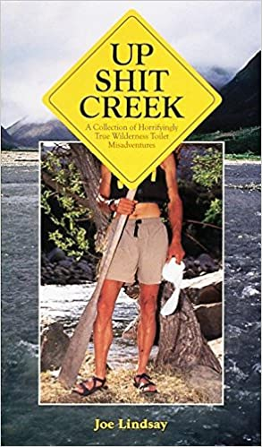
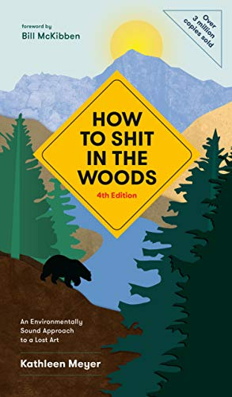

About Us

D.I von Briesen, creator of the Pot-T, grew up in New Mexico, then went to school in DC before doing grad school in Virginia.
After spending his first seven years living in a mountain community with no plumbing or electricity, and realizing he hated outhouses, D.I. has been forever exploring how to take care of business without necessarily flushing down thousands of gallons of potable water and poisoning the earth.
 D.I. was always a bit put off when his step-father said he would turn to scatology, and as a joke, bought him these two books. D.I. expressed his dismay, and so his step-father asked for them back, intending to give them to someone more appreciative. Fearing the loss of this critical knowledge, D.I. read them both quickly before turning them over.
Found below are a collection of videos featuring homemade toilets, so feel free to be inspired while you're here.